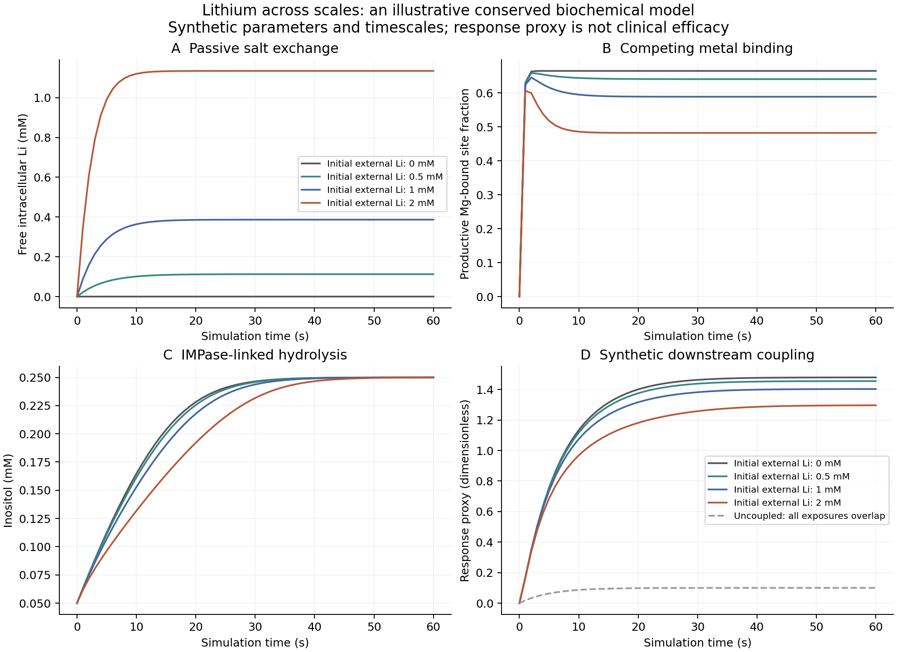

Observation and sleep
Observing Alex with ROS 2
A passive C++ tracker receives synthetic optical poses and lidar scans while real local PSG eye-movement features and REM reference epochs retain their own recording session.
Situated household
Alex at home
Music practice, remembered leftovers, motion and subjective mapping, family preferences, and long-term goals meet in one value-owned C++ scenario.
Statistical integration
Evidence, context, and a virtual Person
Actual HRL and GRRLE engines interpret Eye evidence alongside Bayesian and fuzzy models. Independent scene splits, missing-channel handling, and deliberately wrong compatibility rules make the assumptions inspectable.
Virtual Cell / A computational notebook
A person,
composed.
From molecules to memory. From predictions to choices. A small, inspectable C++ framework for building upward, one relationship at a time.
Originating framework and direction: Michael Emanuel Glover. C++ implementation developed with the assistant.
Michael’s brother, a kind and gifted biochemistry graduate of Kennesaw State University who wanted to study prosthetics.
01 / Build upward
Each level has its own responsibility.
Composition and identity
A human is represented as a concrete kind of abstract Person. Its body contains organs; organs contain tissues. The biological containers own copies. Relational memory instead uses IDs, so several names and structures can refer to the same modeled identity.
Local decisions, wider context
Person and tissue policies supply permissions and preferences. A cell governor checks available energy and compares predicted utility before applying a simplified transition. Predicting, selecting, and executing are separate responsibilities.
Current scope: executable structural and decision models. The lithium extension adds conserved ion transport, reversible metal binding, and an IMPase-inspired reaction. Molecular bonds, whole-organ physiology, and prosthetic interfaces remain future increments.
02 / Several things can matter
A frontier before a final choice.
Change the priorities. Both actions remain Pareto candidates: each gains something the other gives up. The policy selects using your weights.
| Action | Health | Relations | Resources |
|---|---|---|---|
| C | 8 | 7 | 3 |
| D | 6 | 5 | 9 |
This browser example uses three objectives for clarity. The C++ model preserves five: health, security, relationships, learning, and resources. Feasibility comes first; weights cannot authorize a forbidden or unaffordable action.
These are teaching scores, not measured human preferences or universal judgments. Surprisal is tracked separately from utility.
03 / Relations and routes
The same pieces. Different relationships.
The chess-memory example records Michael’s queen–rook mating finish against carla227 and the stalemate against olk. Ordered routes preserve the sequence; typed edges preserve what each relation means.
NullSet, One, Two, Three
NullSet is the abstract container interface. A concrete root may be empty or hold many nodes; One, Two, and Three enforce their immediate membership counts. Recursive references form finite graphs.
Tissue contacts use a separate simplicial complex. Three pairwise edges do not automatically become a filled triangle. A cooperative three-cell group is declared explicitly.
This project’s NullSet is a computational definition. It is distinct from the mathematical empty set. No ternary logic is imposed.
04 / Observe, summarize, revise
A model of the other lives within the self.
The other person remains separate. Our brain owns a self-model and opponent models, with records of observable predictions and outcomes. Summaries follow nested memory, preserve counts and omitted details, and avoid double-counting shared nodes.
Compatibility with an anchor
An optional damped compatibility field updates arbitrary categorical label strengths while retaining a prior. Strengths can support inference; they are not automatically probabilities or utility scores.
Experience with provenance
The integrated example compares predicted and observed objective vectors, records binary forecast error and observed-event surprisal, and retains the source of each experience. Recording an error does not silently retrain the model.
Connections to the portfolio: reciprocal grounding, relaxation labeling, and recursive structures.
New / Eyes, meaning and active representations
Alex has a window into the world.
A pair of value-owned Eyes connects an external light field to reduced retinal cells and the existing Brain. A separate observer estimates whether signals arise predominantly outside or inside Alex, with endogenous events making that inference imperfect.
A small Will interface controls attended representation updates. Active concepts can be retired while their definitions remain available for later reuse.
Physical photon budgets, reduced retinal mechanisms, classical observer inference and proposed representational rules are documented at their respective levels.
Daily milestone / Brain, Body and NervousSystem
A Brain belongs to a Body.
The existing HomoSapiens hierarchy now owns a physical Brain, Heart, Lungs, Skin and Mouth components, ten electrical cells and six delayed connections. Membranes follow an RC current-balance law; reduced spike events connect the circuit.
Value ownership and the Rule of Zero keep lifetimes simple. Connections use body-local cell IDs, so copying a body preserves independent cells, events and routing.
Synthetic parameters and routing. Organ output currently means membrane voltage; pumping, breathing and movement require further physiological mechanisms.
New milestone / Reaction timing and empirical assays
What happens between cycles?
Our C++ lessons now form a tested reaction-cycle module: substrate binding, catalysis, product retention, and lithium occupancy. Exact-event simulation and population dynamics agree with an analytical turnover calculation.
The accompanying empirical IMPase analysis fits 30 digitized assay measurements. Apparent assay constants and proposed microscopic rates remain clearly identified at their respective levels.
New / Lithium across scales
From an ion to a cellular response.
Lithium and magnesium compete for a conserved enzyme-site pool. Reversible salt exchange and balanced, IMPase-inspired hydrolysis evolve inside a compartment model attached to a virtual Person.

Atoms, charge, and enzyme-site moieties are conserved. Nine test suites cover the framework, including equilibrium, passive transport, numerical refinement, and biochemical integration. Whether a synthetic response approaches a declared operating range depends on that range; the model does not presume that a decrease is beneficial.
This extension follows the manuscript’s frozen version 1.0 experiments. Its synthetic results are documented separately.
Research manuscript / Version 1.0
The whole model, on paper.
A 21-page research manuscript by Michael Emanuel Glover: twelve figures, eight tables, sixteen supplementary notes, mathematical propositions, and reproducible experiments.
05 / Open the program
Small files. Reproducible examples.
cmake -S . -B build cmake --build build ctest --test-dir build --output-on-failure ./build/person_model_demo ./build/lithium_demo ./build/enzyme_cycle_demo ./build/bioelectric_demo ./build/vision_demo light
Requires C++17 and CMake. No external dependencies. The published source passed twelve test suites covering cellular bookkeeping, memory and routes, objective summaries, the integrated model, biochemical physics, empirical assay rate laws, reaction-cycle dynamics, bioelectric body ownership, and eye/observer dynamics.
Handwritten teaching trees demonstrate the forest interface. Neural-network training, automatic PGN ingestion, and ant-colony route optimization remain future work.